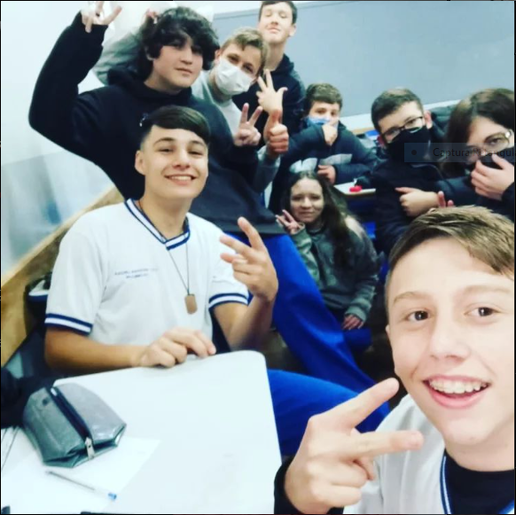

IGOR JOSÉ FARIAS
 20.40.23.jpg)
Olá galera, tudo bem ? Eu sou o Igor e como eu sou muito narcista eu estou fazendo meu proprio site sobre mim mesmo :)
esse sou eu :)
É primeiramente eu to fazendo esse site para testar as minhas habilidades em fazer sites bonitos e para treinar minha habilidade com CSS, então encare isso como um treinamento para testar minha habilidades em um trabalho que não vale nem dinheiro e nem nota.
Um pouco da minha história:
"Eu nasci no ano de 2007, sendo mais específico, no dia 10 de janeiro. Segundo relatos, chorei pouco no nascimento, mas acredito que isso não seja verdade. Eu sempre fui mais quieto que o resto da minha família e odiava perder. Meus primos ainda tiram sarro da minha cara até hoje. Obviamente, eu cresci e amadureci e aprendi a socializar com o tempo. Fui aceitando cada vez mais as minhas derrotas e aprendendo com elas. É claro que eu não gosto de perder, mas faz parte da vida e nem sempre saímos como os campeões em tudo. Ano passado, ingressei no meu primeiro emprego e fundei um grande grupo de amigos chamado "ESTUDIANTES". Eles são incríveis e, se não fosse por eles, o ano passado teria sido uma droga. Com o tempo, o grupo foi crescendo, mas enquanto minha vida social crescia, minha vida profissional ia se afundando cada vez mais. Eu odiava meu trabalho, principalmente por causa dos funcionários que lá trabalhavam."
São esses cornos
2023
esse ano é um ano que eu nunca vou esqueçer, como pode perceber eu até agora nao falei de relacionamentos, pois ate esse ano eu nao havia tido nenhum relacionamento.... até esse ano, pois no final do ano passado eu começei conversar com um serzinho incrivel, muito inteligente e educada, e com o tempo eu me apaixonei, e ela também, entao começamos a "namoricar" estamos aguardando o pai dela nos permitir ter de fato algo a mais, mas ela tem sido muito incrivel e carinhosa comigo, a pessoa que eu mais amo na minha vida, e isso inclui minha familia.
.PNG)
Meu pai não costuma ser muito calmo comigo, e eu também nao ajudo muito ksks, ele é bem esquentadinho, e eu perdi a paciencia a muito tempo, e parei de ficar quieto esperando as coisas melhorar, pois nao se sabe se vão ou não.
MEUS GOSTOS:
Gosto de muitas coisas, mas aqui vou listar os principais:
.jpeg)